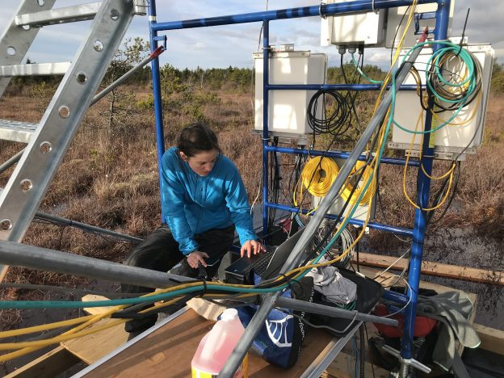

Research

Overview
The EcoFlux lab focuses on measuring and modelling greenhouse gas, water, and energy fluxes across a range of spatial and temporal scales. We combine field-based measurements, remote sensing, and modelling to investigate land-atmosphere interactions in our rapidly changing world, with a current emphasis on wetland ecosystems.
Wetlands provide a wide range of ecosystem services, among which climate regulation is considered one of the most important to society. They play a critical role in the global carbon cycle by sequestering atmospheric carbon dioxide over long timescales, while also being the largest natural source of methane. Despite their importance, the consequences of rising temperatures and other climate perturbations on wetland GHG fluxes remain uncertain. Preventing wetland loss and advancing restoration efforts have been recognized by scientists and policymakers alike as key strategies for reducing future emissions and meeting global climate goals.
My interdisciplinary research addresses these knowledge gaps by quantifying how wetland responses to climate variability and restoration influence GHG exchange. Through collaborative projects, I investigate the drivers and dynamics of wetland GHG fluxes at multiple scales and evaluate the climate mitigation potential of wetland conservation and restoration. This work provides critical insights for improving predictions of wetland contributions to the global climate system and supports climate policy development, including national greenhouse gas inventories and nature-based climate solutions.
EcoFlux Research Projects
CARBONIQUE - CARBON cycling In QUEbec’s wetlands
CARBONIQUE is funded by the Ministère de l’Environnement (MELCCFP) and NSERC and co-led by seven principal investigators across five Quebec universities. It focuses on measuring and modelling GHG fluxes across a range of wetland types in southern Quebec – including open and forested bogs, forested swamps, and freshwater marshes – under both natural and disturbed conditions. It represents the largest and most comprehensive assessment of wetland carbon dynamics undertaken in Canada. Our team is using a combination of eddy covariance, chamber-based flux measurements, and lateral carbon flux monitoring to quantify the full carbon budget of these systems under varying hydrological and land-use regimes. The project aims to generate high-quality empirical data, coupled with modelling tools and management frameworks, to inform and enable the deployment of evidence-based, verifiable, and scalable wetland-based climate solutions. The results will directly support Quebec’s Plan pour une économie verte and Canada’s national climate adaptation and mitigation strategies by providing robust assessments of the capacity wetland restoration and conservation to contribute to GHG reduction goals.
CARBONIQUE in the news:
Radio-Canada - Les tourbières, alliées insoupçonnées contre la crise climatique
Video of the CARBONIQUE team setting up two peatland towers
La force cachée des marécages
Le Devoir - Actualités UQAM
Carbon Fluxes in a Restored Peatland
In collaboration with several other research groups, my lab’s research is focused on measuring GHG, water, and energy fluxes over Burns Bog, a restored peatland in Metro Vancouver. This site is a raised domed peat bog that is undergoing re-wetting as a restoration management strategy following peat harvesting and associated drainage. While restoration can help recover important ecosystems services provided by wetlands, it can also affect the exchange of greenhouse gases, water and energy between the surface and the atmosphere.

By conducting year-round eddy covariance measurements, we are assessing the biogeochemical and biophysical impacts of peatland restoration, and the impacts of forest fire smoke on carbon cycling and energy fluxes in restored peatlands. This research is also being done in collaboration with researchers and staff at Metro Vancouver who are interested in quantifying the climate mitigation potential of wetland restoration and conservation.
Collaborators:
UBC Ecohydrology Research Group
UBC Biometeorology and Soil Physics Group
Dan Moore’s Research Group, UBC Geography
Burns Bog in the news:
Up in smoke: Human activities are fuelling wildfires that burn essential carbon-sequestering peatlands
David Suzuki: For climate’s sake, save the peat!
Carbon Neutral Achievement Sets Stage for Bold Climate Action
Blue Carbon Research

Blue carbon is the carbon sequestered and stored in coastal ecosystems including tidal marshes, mangroves, and seagrasses. Coastal ecosystems are among the strongest carbon sinks in the biosphere. This coupled with their potential for low methane emissions, has generated widespread interest in these ecosystems for climate change mitigation and adaptation. However, measuring and modelling carbon exchanges in tidal wetlands presents unique challenges due to highly dynamic atmospheric and hydrological fluxes, as well as sensitivities to both terrestrial and marine influences.
My research group installed the first two eddy covariance flux towers (CA-DSM and CA-RBM) in tidal wetlands along the Pacific Coast of Canada to quantify and model the net carbon and GHG balance of these marshes, which represent an important data gap in ecosystem-scale measurements of GHG exchange from tidal marshes. In partnership West Coast Environmental Law, we are also working to translate this blue carbon science into policy-relevant information for municipalities and provincial governments.
Our research group is also involved in the NSF funded Coastal Carbon Research Coordination Network. Specifically, we are involved in the Methane Working Group, which aims to compile all methane flux data from coastal habitats (excluding mangroves) in the CONUS to parameterize and validate a set of nested process-based methane models.
Additionally, we are part of a U.S. Department of Energy grant “High-frequency Data Integration for Landscape Model Calibration of Carbon Fluxes Across Diverse Tidal Marshes” focused on leveraging eddy covariance observations to improve landscape-scale models of carbon fluxes across tidal marshes. This grant, led by Dr. Patty Oikawa brings together university and government researchers from across the U.S.
I am also a co-investigator on a collaborative research effort to model the current and future mitigation capacity of Canada’s blue carbon ecosystems, which is funded by an NSERC Alliance grant. The project is led by Julia Baum (University of Victoria), and includes four co-principal investigators and seventeen collaborators from across the country which are contributing to this national natural ocean climate solutions research effort. The project brings together a consortium of four universities, three government agencies, and four eNGOs.
Freshwater mineral soil wetlands as Nature-based Climate Solutions
As part of a national collaboration funded by Environment and Climate Change Canada’s Climate Action and Awareness Fund and a previous NSERC Alliance grant, I am co-leading GHG flux monitoring at three freshwater mineral soil (FWMS) wetlands in Canada, including three long-term eddy covariance sites in Manitoba co-managed with Ducks Unlimited and one in Quebec. My research in this project focuses on measuring and synthesizing GHG fluxes from these wetlands to inform biogeochemical models and guide management strategies aimed at reducing emissions. A key contribution of this work is the development of decision-support tools, such as a GHG calculator, to quantify emission reductions resulting from the conservation and restoration of FWMS wetlands as NbCS.
FWMS wetland research in the news:
University of Toronto Scarborough News
Project intended to demonstrate wetlands’ greenhouse gas impact
DUC analyzing wetlands on farms and ranches for carbon capture
DUC Carbon Tower Project
FLUXNET-CH4 – a global database of eddy covariance CH\(_4\) flux measurements and wetland synthesis for CH4
Natural wetlands are the largest, yet most uncertain, natural source of CH\(_4\) to the atmosphere. Eddy covariance measurements of CH\(_4\) fluxes are important for constraining CH\(_4\) budgets, understanding the response of CH\(_4\) fluxes to environmental factors and climate, and creating validation datasets for the land-surface models used to infer global CH\(_4\) budgets. Unlike well-coordinated efforts for synthesizing carbon dioxide (CO\(_2\)) flux tower observations (e.g., FLUXNET), no such network and data synthesis effort existed previously for CH\(_4\). As part of an initiative coordinated through the Global Carbon Project in close partnership with AmeriFlux, EuroFlux, and FLUXNET, we compiled a global database of eddy covariance CH\(_4\) flux measurements to answer regional and global questions related to the global CH\(_4\) cycle. Through this activity, I coordinated the collection, aggregation, standardization, and post-processing of global methane data from the flux tower community. FLUXNET-CH4 Version 1.0 includes data from 79 sites, representing freshwater, coastal, upland, natural, and managed ecosystems. Version 1.0 of the database is publicly available.

We used FLUXNET-CH4 data to assess global freshwater wetland coverage. As expected, current sites represent bioclimatic attributes well in arctic, boreal, and temperate regions, but are sparse in humid tropical areas—where CH\(_4\) fluxes are typically highest and most uncertain. To better constrain tropical CH\(_4\) emissions and their role in rising atmospheric CH\(_4\), expanded observational coverage is urgently needed. To fill this gap, we are expanding FLUXNET-CH4 to include additional sites, with a focus on tropical flux towers. For more information on submitting data to FLUXNET-CH4 V2.0, please see here.
Additionally, through a USGS Powell Center Working Group, we leveraged FLUXNET-CH4 V1.0 to provide novel insights into the controls and timing of wetland CH4 emissions for North America and globally, inform and validate biogeochemical models, and upscale wetland CH4 flux measurements globally.
Collaborators:
Global Carbon Project
AmeriFlux
FLUXNET
Jackson Lab, Stanford University
Terrestrial Carbon Cycle Group, Stanford University Stanford Machine Learning Group
PUCP, Dr. Eric Cosio and Dr. Norma Salinas
UK Centre for Ecology and Hydrology, Dr. Carole Helfter
Okavango Research Institute, Dr. Mangaliso Gondwe
LBNL, Dr. Robinson Negron-Juarez
INRAE, Dr. Damien Bonal
Mamirauá Institute for Sustainable Development, Dr. Ayan Fleischmann